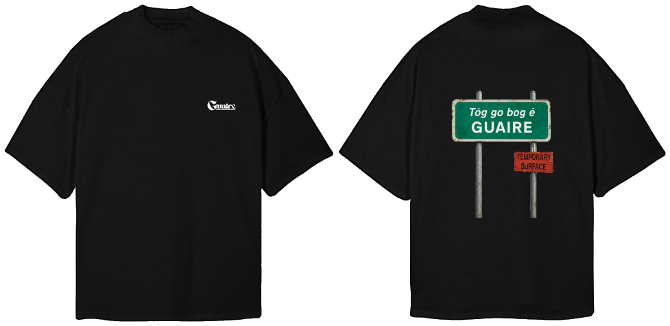
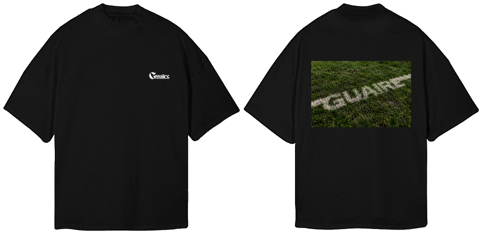
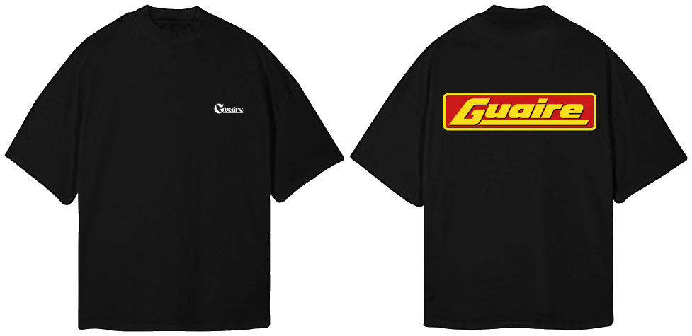
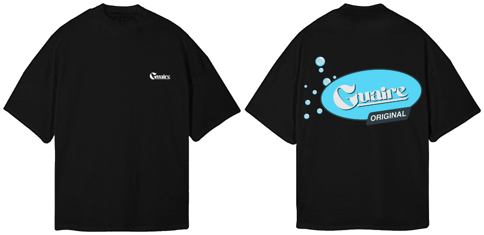
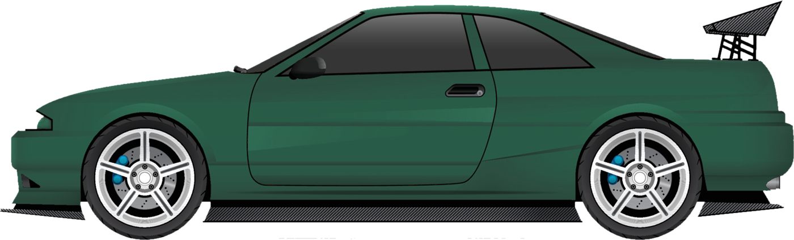

Tóg Go Bog É Tee
Oversized black tee. A green Irish road sign on the back: take it easy, temporary surface ahead.
€45
Get it first
Drop 01 · Autumn 2026 · Designed in Ireland
Clothes for the deli counter, the soft day and the smoking area at 1am. Modern Irish life, no shamrocks.
Get on the guest list
Oversized black tee. A green Irish road sign on the back: take it easy, temporary surface ahead.

Oversized black tee. GUAIRE painted on the pitch, like the lines on every Sunday morning.
Chapter one
Most of Irish life happens somewhere between the bus stop and the pub.
Then someone says “are we going out?”
Chapter two · After dark
The queue. The smoking area. The chipper after. The lift home.
GUAIRE is what you wear through all of it.

Oversized black tee. Small Guaire on the chest, the red and yellow sign across the back.

Oversized black tee. Small Guaire on the chest, the sky-blue Original oval and bubbles across the back.
522 nightclubs in Ireland in 2000. 83 by 2025.
Most towns that had two or three late venues now have none. The ones left pay for a special licence every night just to stay open, then turn the lights on at half two. In Berlin, Barcelona or Amsterdam, that's when the night gets going.
The queue, the dancefloor, the smoking area: it's one chapter of Irish life, and it's worth keeping.
Figures: Give Us The Night report, 2025
Irish nights shouldn't end at half two.
Chapter three

Never drinking again.
See you Friday.
The idea
GUAIRE takes the everyday stuff of Irish life, like the places, the slang, the sport, the nights out and the weather, and turns it into clothes you'd wear anyway.
The Irish part isn't always obvious. Sometimes it's the colour of a school jumper, the shape of the sign over the chipper, or a line only your cousins would get. That's the point.
The menu
Seven pieces for the launch: four tees, two hoodies and a cap. Made in small runs. The guest list gets served first.
Guest list · Drop 01
Well, you will be. One email when Drop 01 goes live, plus 24 hours early access. Nothing else.